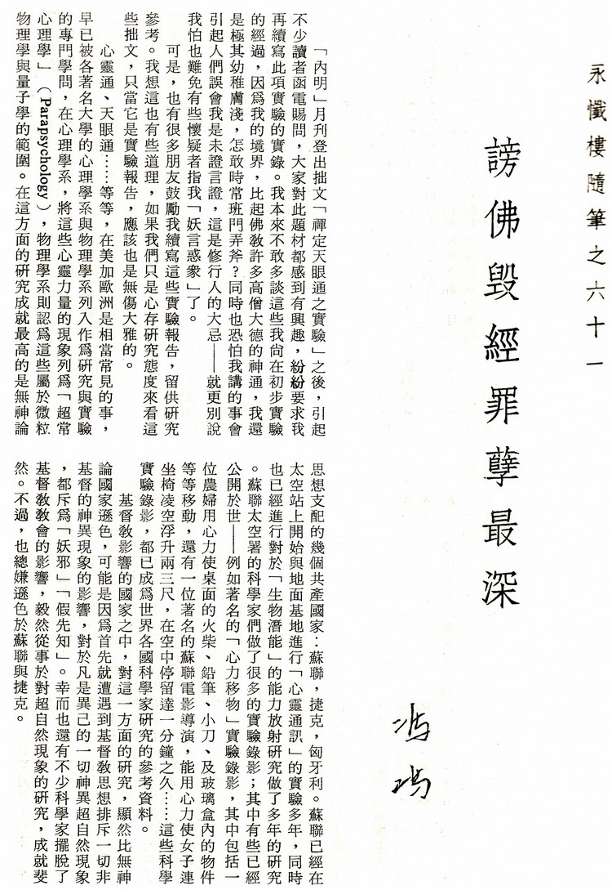
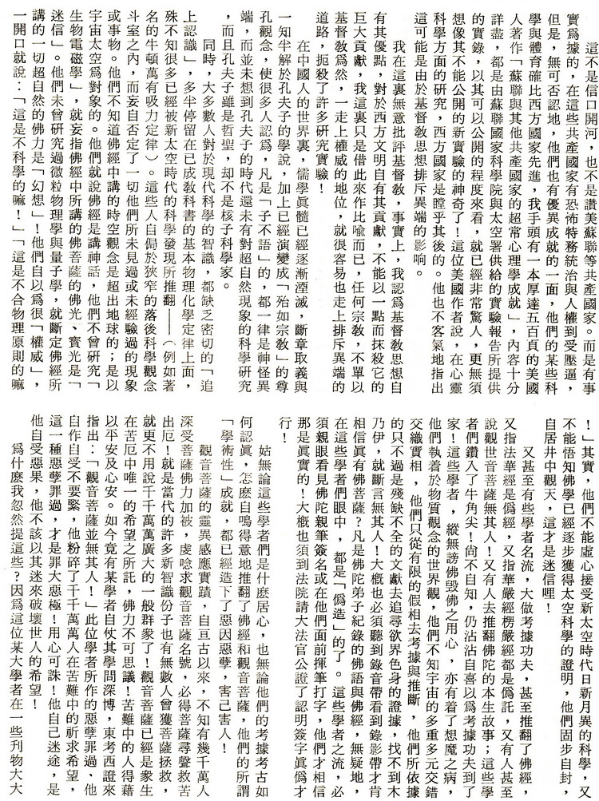
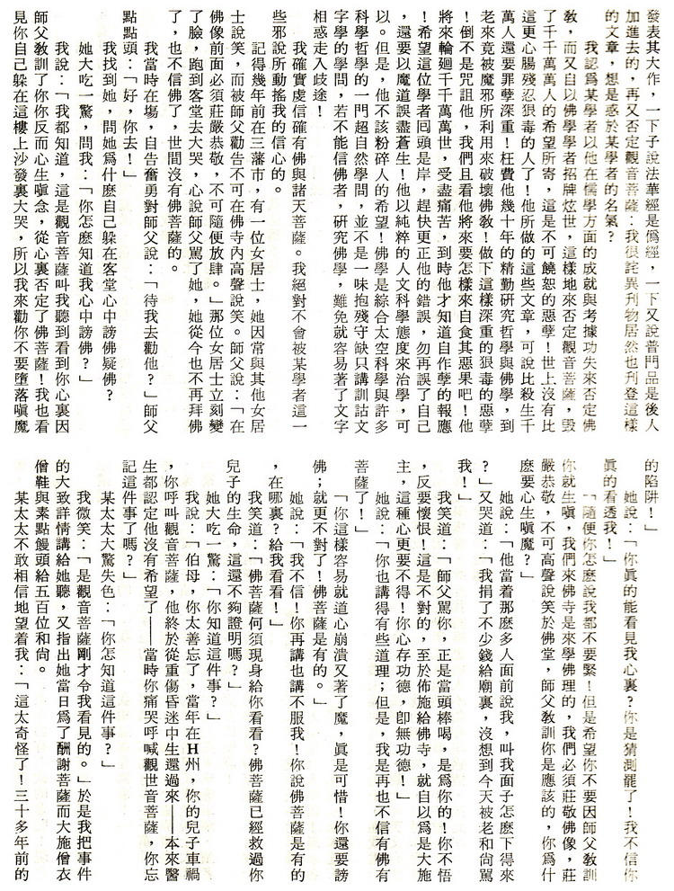
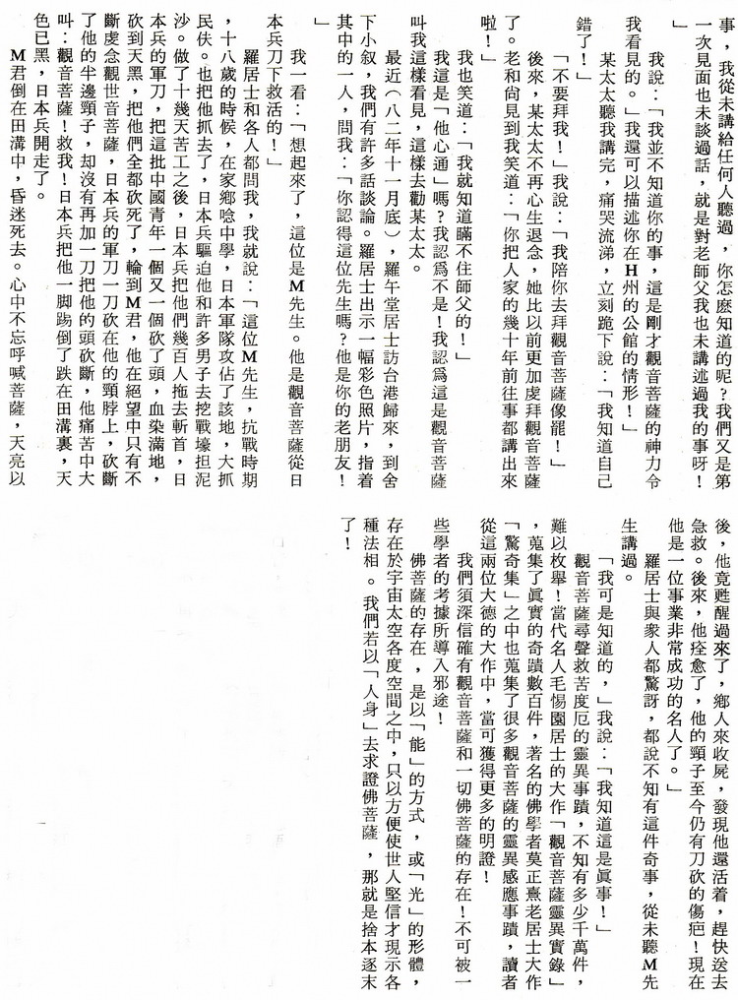
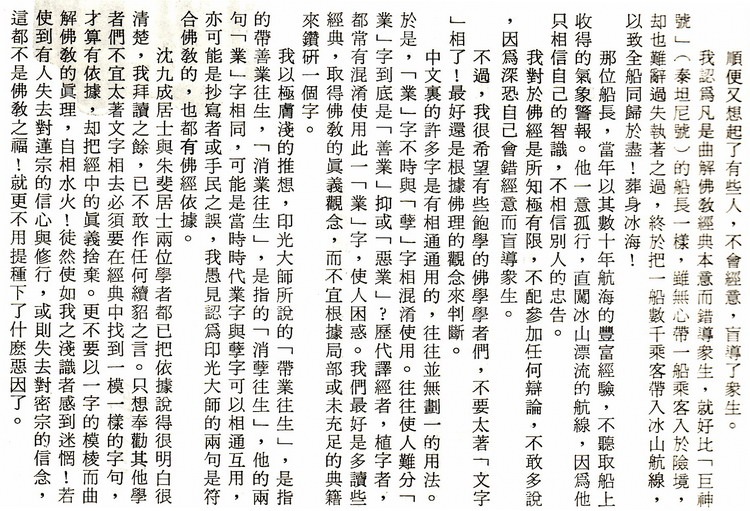

谤佛毁经罪孽深重
冯冯




一九八二年四月廿八日,一位素未谋面的西人男子,应我电话之召,来我家修理沙发,我见此人甚好人品,听他说英文有德国口音,我就改用德语与他谈话(我的德语欠佳,只可作简单会话),我因而获知他是奥国维也纳人。我二十年前曾在维也纳获文学奖誉,故此我对维也纳人不免有些感情,彼此谈得很投契。
我突然劝他:“不要再到山林去打猎了!打猎是无故而杀生的行为,你太爱打猎了!”
“你怎知我爱打猎?”法兰克诧异问我。“我知道!”我说:“我看见你曾经进入加州北部的红木森林中,你心中惊疑,因为你觉得好像有人在窥伺你,你听到呼吸,四望又没有人影,你知道吗?那是红木的精灵在窥伺你!这些数百年的古木,他们有智慧的。”
他大惊失色:“是的,我是有一次这样的经验!当时我惊骇得逃跑,可是我从未告诉任何人!你怎知道呢?”
我说:“我非但看见这件往事,还看见你未来在九月左右将入山打猎!”
“你有天眼?”
“没有!”我说:“是观音菩萨叫我警告你,劝你别再为了娱乐去屠杀那些鹿群!否则,你会自招危险!会有子弹飞向你的头部右边,甚至丧生!如果你有一念之善,不再杀生,你或可逃此厄。”
法兰克说:“我是基督教徒,我不信你这些话。”
我说:“你不信,不要紧,可是,我求你:九月份你入山打猎时,放过那只怀孕的母鹿,不要杀它!你若肯一念慈悲,菩萨必会保佑你平安归来。”
法兰克笑着走了。
十月中旬,法兰克突然来访,感激地说:“彼得你真行!”
我笑:“子弹果然擦过你的右耳了?”
“是的!”法兰克说:“九月份我休假,朋友们约好一同入山打猎,我们到了深山,在大雪中走了三四天,才看见一只鹿,我是首先发现的,我举起枪,瞄准,忽然注意到, 它是一只大肚子的母鹿,我突然记起你的警告和请求,我心软了,向天开了一枪,把它吓跑了,免得他被我的同伴发现。后来,当天晚上,大家在营火旁边喝酒,同伴们擦枪,有一位不小心,碰了板机,一颗子弹射向我头上来, 咻的一声，擦过我的右耳!”
我说:“这颗子弹本来会射入你头部眉心的,只因你有一念之善,菩萨特别救了你!你以后不可再杀生了!也不可不信有佛菩萨了。”
法兰克说:“我信了!我信了!我当时惊魂甫定,记起你讲的话。我就中止入山,空手而归,我从今再不打猎杀生了!”
法兰克现在兼信耶稣与佛陀菩萨,我觉得这也不妨,只要他心向善念,不再杀生就好。

永忏楼随笔之六十一──《谤佛毁经罪孽深重》
原载香港《内明》第132期：1983年03月1日
书名：禅定天眼通之实验
作者：冯冯
出版：天华出版事业股份有限公司